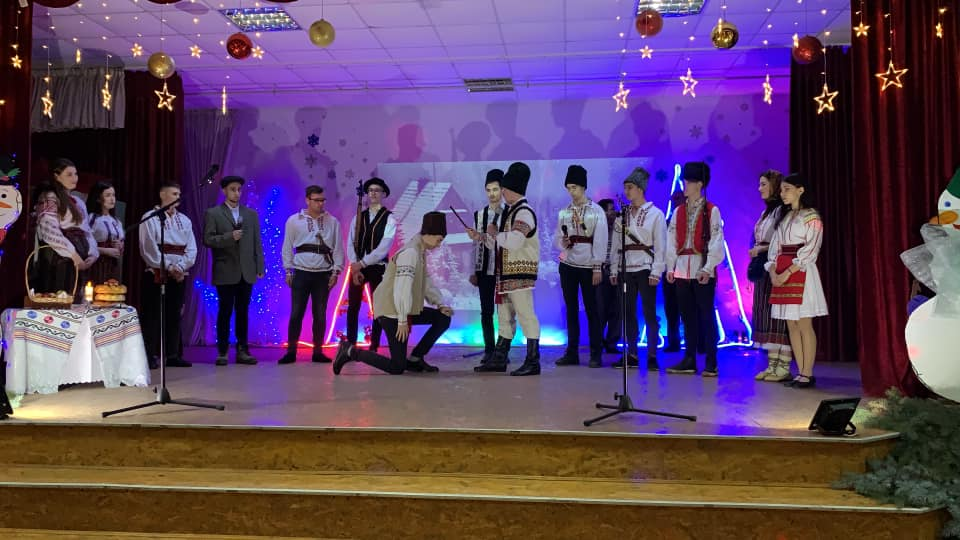

Zilele Eminescu
A devenit deja o tradiție, ca la mijloc de ghenar, în fiecare an, Liceul Teoretic „Mihai Eminescu”,
Edineț să organizeze Proiectul Educațional „Zilele Eminescu”, venerându-l astfel pe patronul spiritual al instituției.
Anul acesta proiectul a ajuns la cea de-a cincea ediție, la care au participat 125 de elevi din instituțiile
de învățământ cu predare în limba română și alolingve ale raionului. Concursul nominalizat se desfășoară
la inițiativa directorului liceului, dna Natalia Cojocaru, în parteneriat cu Direcția Educație și
Primăria municipiului Edineț.
“Sub raza gândului etern"
Zilele Eminescu la Liceul Teoretic "Mihai Eminescu" Edineț.
Recitalul de poezie “Sub raza gândului etern" a avut 41 de elevi participanți
din majoritatea instituțiilor de învățământ din raion.
Oaspete de onoare a fost Galina Musteață,Șef Direcția Învățământ a Consiliului Raional Edineț ,care în discursul rostit a
îndemnat discipolii la studierea operei lui Mihai Eminescu și cultivarea verbului matern.
Angela Moraru, specialist principal , Direcția Învățământ a Consiliului Raional Edineț a
adus sincere felicitări elevilor și profesorilor participanți, îndemnându-i să păstreze și să
promoveze versul și spiritul eminescian.
Victimele Holocaustului.
Astăzi, întreaga lume marchează Ziua internațională de comemorare a victimelor Holocaustului.
În fiecare an, 27 ianuarie este ziua când omenirea deplânge pe cei care au fost exterminați și torturați
în lagărele naziste, cele de concentrare, de muncă forțată și închisorile regimului hitlerist.
Această zi a fost marcată şi în liceul nostru printr-un filmuleț despre viața din lagăre,
informații referitoare la fenomenul Holocaustului, emisiune radiofonică, dar şi poezii ce au sensibilizat elevii prezenți.
Revelion 2020

În cadrul activității, familia noastră eminesciană a demonstrat din nou talent şi măiestrie.
Mulțumim organizatorilor, dnei Adela Ropot (diriginta cl. a XII-a "A") şi dnei Rodica Berliba
(diriginta cl. a XI-a "A"), conducătorului ansamblului de dans folcloric "Moştenitorii"-dlui Anatol Goraş,
conducătorului ansamblului de dans modern "Black&White"-dnei Angela Gangur, conducătorilor artistici-dnei
Popov Anastasia, dlui Jacotă Leonid, dnei Burduh Corina pentru prestația deosebită a elevilor.
"Un alt Eu"
În data de 20.11.2019, departamentul Imaginea Şcolii(preşedinte - Țentiu Tatiana)a Consiliului Elevilor
a organizat activitatea "Un alt Eu", prin care elevii, în cadrul unei parade a costumelor în "Galeria personajelor
literare", au prezentat cum şi-au imaginat ei că ar arăta personajul din romanul/povestirea preferată.
Ziua Națională a mărului.
Începând cu anul 2013, în ultima sâmbătă a lunii septembrie, în Republica Moldova este
sărbătorită Ziua Națională a mărului. Astăzi elevii clasei a II-a "B"(învățătoare-Burduh Corina),
în parteneriat cu biblioteca școlară, au petrect o lecție în care au aflat multe curiozități despre măr.
La sfârșitul lecției elevii au primit câte un măr, iar din partea dnei Svetlana Cosovan(bibliotecară) au
primit câte un semn de carte care o să le reamintească elevilor de această sărbătoare națională, dar și
de beneficiile mărului.